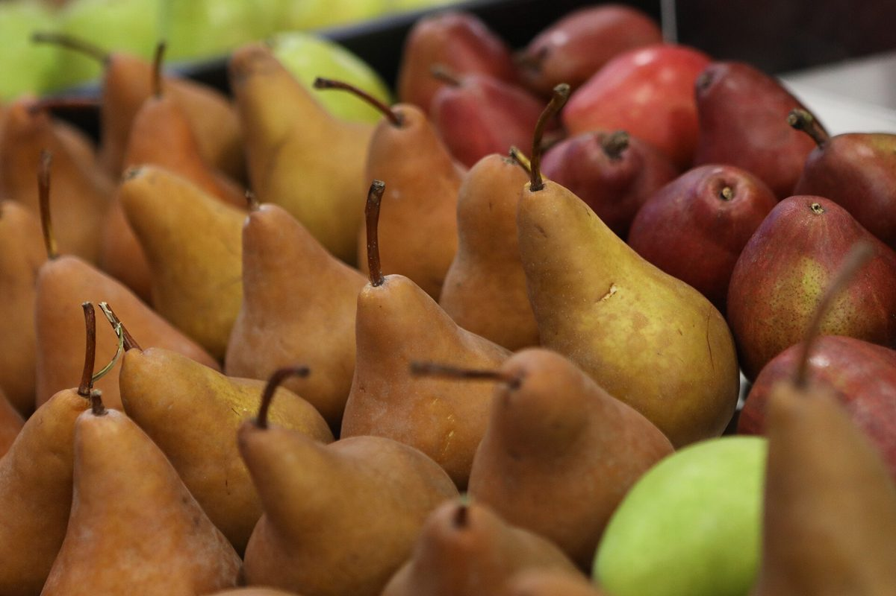
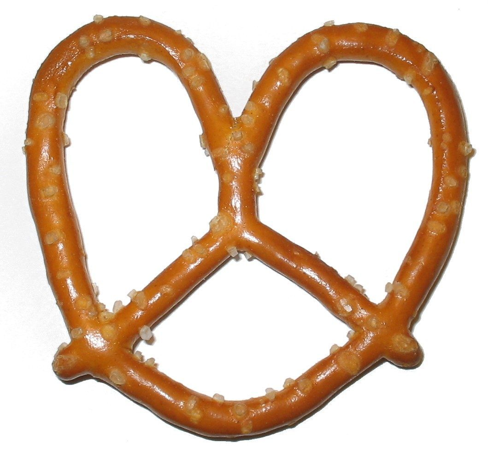

店のこと
ハンガーラックの部位の配置図
お店の詳しい情報は準備中です。ここでは、制作側が考えたデザインの考え方を紹介します。


制作側の連想
番号は、部位の番号
ホームの図にある1〜6の番号は、それぞれハンガーラックの部位の名前に対応します。ハンガーラックの部位を図にしたもので、制作側の連想です。お店の理念・由来とは無関係で、実際の製品の仕様を示すものでもありません。
1ハンガーパイプ
いちばん上に渡した横棒で、ハンガーをかけて並べる部分。
2支柱
左右に立つ縦のポールで、横棒や棚板を支える骨組み。
3伸縮ジョイント
支柱の途中にある継ぎ目で、ねじをゆるめて高さを変える部分。
4下段の棚板
支柱のあいだに渡した板で、箱や小物をのせる段。
5脚フレーム
支柱の下で左右をつなぐ土台の横材で、全体の重さを受ける。
6キャスター
脚フレームの両端につく小さな車輪で、ラックを動かすための部品。
写真(イメージ)
写真(イメージ)



写真はイメージです。お店のものではありません。